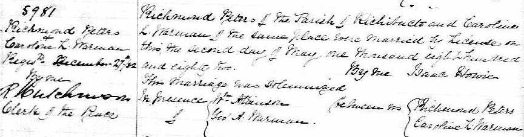

Caroline Lucinda Peters (née Warman) 1859 - 1942
[ Home ] | [ Calendar ] | [ Surnames Index ] | [ Family History ]Caroline Warman, the wife of Richmond Noble Peters (the second cousin three-times-removed on the father's side of Nigel Horne), was born in Richibucto, Kent, New Brunswick, Canada on Mar 17, 18591,2,3,4,5,6 and married Richmond (a farmer with whom she had 7 children: Rowena Dorcas Roma, Grace Idaline, Henry Albert, Rev Ovid Hutton, Pte Howard Watson, Ewart A and Eunice Louisa) in Richibucto on May 2, 1882.
Caroline spent all of her life in New Brunswick, Canada. Throughout her life, she lived in several places around the county: in Weldford, Kent, New Brunswick, Canada on May 28, 18911; in St Marys, York in 19012; in York, New Brunswick, Canada in 19113; in Douglas on Jun 1, 19214 following the death of her husband on May 3, 1906; and at 907 Barker Street, Fredericton in 1942.
She died on Jul 13, 1942 in Fredericton, New Brunswick6 (chronic endocarditis) and was buried at Sunny Banks Cemetery, South Devon, New Brunswick on Jul 14, 1942 (www.rootsweb.ancestry.com)6.
Children
- Rowena Dorcas Roma was born on May 20, 1883
- Grace Idaline was born on Sep 22, 1885
- Henry Albert was born on Dec 6, 1887
- Rev Ovid Hutton was born on Jul 12, 1890
- Pte Howard Watson was born on Apr 25, 1893
- Ewart A was born on Apr 4, 1895
- Eunice Louisa was born on Sep 10, 1897
Citations
- 1891 Census of Canada Ancestry.com Operations Inc (Marital Status: Married; Relation to Head of House: Wife)
- 1901 Census of Canada Ancestry.com Operations Inc (Marital Status: Married; Relation to Head of House: Wife)
- 1911 Census of Canada Online publication - Provo, UT, USA: Ancestry.com Operations Inc, 2006. .Original data - Library and Archives Canada. Census of Canada, 1911. Ottawa, Ontario, Canada: Library and Archives Canada, 2007. http://www.collectionscanada.gc.ca/databases/census-19 (Marital Status: Widowed; Relation to Head of House: Head)
- 1921 Census of Canada Ancestry.com Operations Inc (Marital Status: Widowed; Relation to Head of House: Mother)
- Canada Census 1891 - Findmypast
- Canada, Find A Grave Index, 1600s-Current Ancestry.com Operations, Inc.
- Canada Census 1901 - Findmypast (was the wife of the head of the household)
Media
Richmond Peters - Caroline Warman - marriage

Canada Census 1901 - CAN/CENSUS/1901/00742757
Family Tree

Generated by ged2site. Last updated on Nov 13, 2024